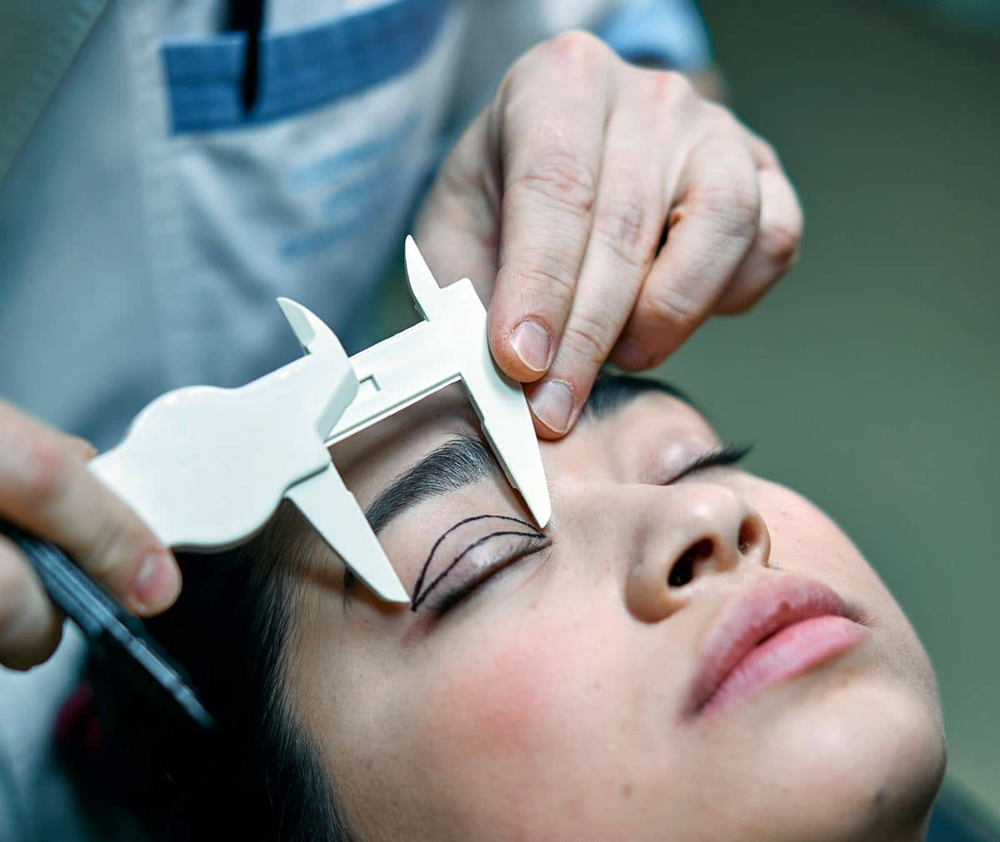

Blefaroplastia - chirurgia pleoapelor care vă întinerește
Blefaroplastia este o intervenție chirurgicală efectuată la nivelul pleoapelor practicată de cele mai multe ori în scop estetic. Aceasta este adesea numită „lifting al pleoapelor” și poate fi realizată pe pleoapa superioară, pe cea inferioară sau uneori pe ambele pleoape. Prin blefaroplastie se îndepărtează excesul de piele, grăsime și țesut muscular de la nivelul pleoapelor care pot cauza aspectul obosit, îmbătrânit sau pungile de sub ochi.
În timpul procedurii chirurgul face incizii precise în pliurile naturale ale pleoapelor sau în zonele de sub genele inferioare, pentru a minimiza vizibilitatea cicatricilor. Apoi, excesul de piele, grăsime sau țesut muscular este îndepărtat sau rearanjat pentru a crea un aspect mai tânăr, mai luminos și mai deschis al ochilor. După încheierea operației, se aplică suturi subțiri pentru a închide inciziile.
Blefaroplastia poate fi realizată din motive estetice, pentru a îmbunătăți aspectul ochilor și pentru a reduce semnele de îmbătrânire. Se face însă blefaroplastie și din motive funcționale, în cazul în care pleoapele căzute sau excesul de piele afectează vederea pacientului. Această intervenție poate fi efectuată atât în cazul bărbaților, cât și în cazul femeilor. În mod obișnuit se realizează sub anestezie locală.

Recomandări
Prin efectele sale estetice, blefaroplastia poate fi considerată așadar o procedură de rejuvenare. Pacienții dobândesc un aspect întinerit cu păstrarea mimicii și a expresivității feței. Până în urmă cu câțiva ani blefaroplastia era o intervenție solicitată în primul rând de femei și mai mult după 40 de ani. Azi, normele societății moderne au coborât această vârstă. Avantajele funcționale date de eliminarea surplusului de piele la pleoape este luat în considerare în proporție aproape egală și de către bărbați.
Pleoapele mari, grele și cu exces de grăsimi pot da senzația de ochi obosiți. Blefaroplastia este o cale prin care să eliminați acest neajuns.
Blefaroplastia superioară și inferioară.
Având două tipuri de pleoape este normal să avem și două tipuri de blefaroplastii, respectiv superioară și inferioară. Chiar dacă principiul medical este același, totuși chirurgul se adresează la două structuri diferite. Și implicațiile sunt diferite, mai ales în ceea ce privește vindecarea după operație.
La blefaroplastia superioară vindecarea este în general rapidă, edemul și vânătîile nu durează în general mai mult de o săptămână, maxim două. În schimb, la pleoapa inferioară avem de-a face cu o structură puternic vascularizată. Iar acest lucru determină o vindecare de trei-patru săptămâni.
Rezultatele blefaroplastiei sunt vizibile după vindecare și pot varia în funcție de dorințele pacientului și abilitățile chirurgului. Discuția preoperatorie cu medicul este esențială pentru stabilirea indicației chirurgicale. Astfel, se poate evalua starea pleoapelor, se pot seta așteptările și planifica pașii înspre un succes chirurgical.
Orice intervenție chirurgicală este supusă unui risc de potențiale complicații. Respectiv la infecții, sângerări, umflături sau modificări temporare sau permanente ale sensibilității pielii. Totuși, acesta este foarte mic la blefaroplastie, fiind considerată o procedură sigură. La ArtVision Med facem eforturi constante pentru a diminua aceste riscuri și de a maximiza eficiența și siguranța procedurii. Și încă un amănunt: intervenția chirurgicală este condusă de dr. Andrei Mureșan.